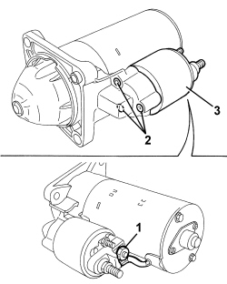

5520B18 STARTER MOTOR SOLENOID - R+R WITH MOTOR REMOVED
- Path
- Procedures > 55 ELECTRICAL EQUIPMENT > 5520 ENGINE STARTING > 5520B STARTER MOTOR AND COMPONENTS > 5520B18 STARTER MOTOR SOLENOID - R+R WITH MOTOR REMOVED
- Kind
- repair procedure (removal / refitting; the operation number is the code)
- Applies to
- engines: 1.9 JTS, 2.2 JTS, 1.9 JTD 8V, 1.9 JTD 16V, 2.4 JTD 20V; all production periods
- Interactive page
- https://sloeber94.github.io/elrnDB/alfa/159/en/#/939010998
Applies to: engines: 1.9 JTS, 2.2 JTS, 1.9 JTD 8V, 1.9 JTD 16V, 2.4 JTD 20V; all production periods
 Removing
Removing
 Refitting
Refitting1. Undo the nut and disconnect the electromagnet electrical connection.
2. Undo the bolts.
3. Remove the electromagnet.

Applies to: engines: 1.9 JTS, 2.2 JTS, 1.9 JTD 8V, 1.9 JTD 16V, 2.4 JTD 20V; all production periods
Refitting
Removing- Check that the electromagnet is not damaged.
- Position the electromagnet and secure it using the bolts.
- Connect the electrical connection for the electromagnet and tighten the nut.